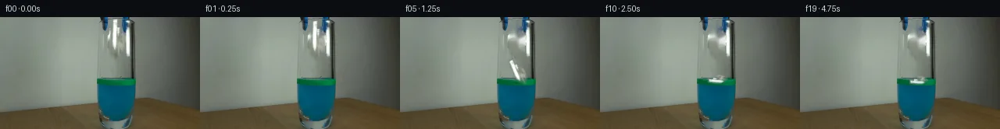

![首帧]()

Round 00
2026-11-05T06:16:55.709382+00:00像素候选变化代码 +210/−0inspection 更新
pixels 5e986a8c197dae49 · code 02cbe5138848b5d8
查看本轮 generate.py 真实 diff
--- previous/generate.py +++ current/generate.py @@ -0,0 +1,210 @@ +from pathlib import Path + +import cv2 +import numpy as np +from PIL import Image, ImageDraw, ImageFont + +from artifact_io import save + + +ROOT = Path(__file__).resolve().parent +W, H = 256, 144 + + +def affine_about(cx, cy, dx, dy, angle_deg, sx=1.0, sy=1.0): + """Forward affine mapping centered on the paper's source centroid.""" + a = np.deg2rad(angle_deg) + c, s = np.cos(a), np.sin(a) + # Image-space clockwise-positive rotation. + linear = np.array([[c * sx, s * sy], [-s * sx, c * sy]], np.float32) + center = np.array([cx, cy], np.float32) + target = center + np.array([dx, dy], np.float32) + offset = target - linear @ center + return np.column_stack((linear, offset)).astype(np.float32) + + +def composite_paper(base, source, alpha, params, wet=0.0): + dx, dy, angle, sx, sy = params + matrix = affine_about(151.0, 27.0, dx, dy, angle, sx, sy) + warped_rgb = cv2.warpAffine( + source, matrix, (W, H), flags=cv2.INTER_CUBIC, + borderMode=cv2.BORDER_CONSTANT, borderValue=(0, 0, 0) + ).astype(np.float32) + warped_a = cv2.warpAffine( + alpha, matrix, (W, H), flags=cv2.INTER_CUBIC, + borderMode=cv2.BORDER_CONSTANT, borderValue=0 + ).astype(np.float32) / 255.0 + + if wet > 0: + yy = np.arange(H, dtype=np.float32)[:, None] + # Refraction starts at the green marked surface and strengthens below it. + depth = np.clip((yy - 79.0) / 15.0, 0.0, 1.0) * wet + depth = np.broadcast_to(depth[:, :, None], warped_rgb.shape[:2] + (1,)) + blue = np.array([12.0, 105.0, 139.0], np.float32) + warped_rgb = warped_rgb * (1.0 - 0.48 * depth) + blue * (0.48 * depth) + # Wet paper loses some contrast through the blue water. + local_gray = cv2.GaussianBlur(warped_rgb, (0, 0), 0.55) + warped_rgb = warped_rgb * (1.0 - 0.20 * depth) + local_gray * (0.20 * depth) + warped_a *= 1.0 - (depth[:, :, 0] * 0.10) + + a3 = np.clip(warped_a[:, :, None], 0.0, 1.0) + return np.clip(base.astype(np.float32) * (1.0 - a3) + warped_rgb * a3, 0, 255).astype(np.uint8), warped_a + + +def add_water_effects(frame, center_x, strength, radius, phase, paper_alpha): + """Add restrained surface ripples and the submerged paper shadow.""" + if strength <= 0: + return frame + out = frame.copy() + overlay = out.copy() + + # Soft underwater shadow/refraction under the crumple, clipped to vessel. + shadow = np.zeros((H, W), np.uint8) + cv2.ellipse(shadow, (int(round(center_x)), 93), (max(3, int(radius * 0.48)), 3), + 0, 0, 360, int(34 * strength), -1, cv2.LINE_AA) + shadow = cv2.GaussianBlur(shadow, (0, 0), 2.0) + vessel = np.zeros_like(shadow) + cv2.ellipse(vessel, (149, 106), (24, 38), 0, 0, 360, 255, -1) + shadow = (shadow.astype(np.float32) * (vessel.astype(np.float32) / 255.0)).astype(np.uint8) + shade = np.zeros_like(out) + shade[:] = (4, 63, 78) + sa = (shadow.astype(np.float32) / 255.0)[:, :, None] + overlay = np.clip(overlay * (1.0 - sa) + shade * sa, 0, 255).astype(np.uint8) + + # Ripples occupy the marked surface only. Alternating highlights and dark arcs + # preserve the original green band rather than replacing it. + ripple_layer = np.zeros((H, W, 4), np.uint8) + cx = int(round(center_x)) + rx1 = max(4, int(round(radius))) + rx2 = max(3, int(round(radius * 0.62))) + ry1 = max(1, int(round(1.2 + 1.7 * strength))) + alpha1 = int(112 * strength) + alpha2 = int(80 * strength) + cv2.ellipse(ripple_layer, (cx, 82 + int(round(phase))), (rx1, ry1), 0, + 185, 355, (45, 179, 147, alpha1), 1, cv2.LINE_AA) + cv2.ellipse(ripple_layer, (cx, 83 - int(round(phase))), (rx1, ry1), 0, + 5, 175, (0, 67, 66, alpha2), 1, cv2.LINE_AA) + if radius > 8: … diff truncated; 123 more lines …